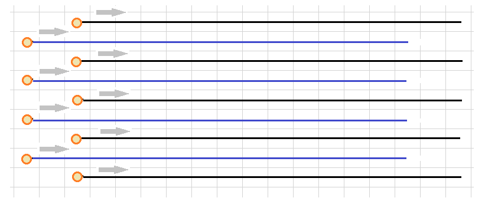
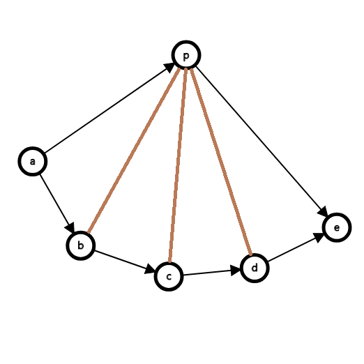

今天第一次打正式的Google Code Jam比赛，从开场思维混乱，前期血崩，时间过去一大半才写好A题的慌张，到发现B题是智障题的窃喜，再到B题奇怪地TLE、WA，以为读错题的恐惧，到没来得及写完C题的遗憾，再到最后发现过掉A题的人是最少的的信息，这次比赛的心路历程真的是一波三折啊！看来不管前期怎么样，都不要放弃希望啊！在这里就记录一下我的感受吧。
一些客观结果：
- Rank 942 out of 8440, Score 63 / 100
- T1 Accepted (31 / 31, 1 try, 3266 byte)
- T2 Accepted (32 / 32, 3 tries, 1919 byte)
- T3 Not attempted (0 / 37, 0 try) (Upsolved, 1 try, 1487 byte)
Replay
之前没有看过以前 GCJ 的题目，一看只有三道题，有部分分，感觉有点 OI 赛制的意味啊，那就按顺序开题吧。
开场看了A题，发现是比较擅长的构造题。模拟了下题意，有一点思路了，但是还没有仔细想。往后瞄了一眼，发现C题好多人都过掉了，读了好几遍题意，结果还是没读懂。这又是字符串题，不算特别擅长。我有点自闭了，最后还是决定开 A 题。
想了5分钟，基本想出构造的框架了；可是有不少细节。一会我发现小范围需要暴力，一会我发现构造方法需要分奇偶性讨论，常常是我想出来一种解决方案，可是一会儿就被自己 hack 了。中途看了眼榜，发现榜单有 800 页人，可是我错以为是 800 个人了，自认为竞争不激烈，可以随便打。然后就开始休闲敲代码模式，写了改，改了写，不知道弄了多久，终于过自己的样例了，可是也不是多稳。先交一下吧，交上去果然也过 pretest 了。可是一看排名：You are ranked 3890. ？？？什么鬼？这时候我才发现 800 只是页数，我顿时开始慌了。一看当时太休闲了，已经过去 90 分钟了，只剩下 60 分钟解两道题，其中还有一道我读不懂，过 pretest 的题也大概率 FST。算了，这一场就是背，我心想。
不想看 C 题啊，于是我又迷迷糊糊看了一下 B 题，发现是道交互题。神志不清地想了一下，发现题目给的条件怪多，可是这不就是个 CRT 裸题吗？迅速敲完了代码，交上去，结果 TLE 。发现是调试语句忘删除了，删掉之后信心满满交了一发，结果 WA。这次我可是有点自闭了，我是不是读错题了？慌忙又读了一下题，没问题啊！看了眼代码，发现多组数据，有个数组忘记清空了。唉，我是智障，改了一下就过了。
看了下表，还有 28 分钟。 C 题应该是不难的吧，那么多人都过了。可是刚开始读题的阴影挥之不去，比赛时间也越来越少。耐下心来仔细读，总算把题目读懂了。还剩下 20 分钟，这题怎么做啊？我想到了一个很靠谱的贪心（本质和 trie 一样），但是中间需要用后缀数组求lcp 。这怎么可能写完？我想到用字符串哈希实现，结果发现那样做可能会炸复杂度。我唯独没有想到直接用 trie 树。只剩 6 分钟了，我突然发现，把字符串翻转之后扔进 trie 树，之后不就是遍历一下 trie 树的智障题了吗？可是实在是来不及写了。想着总要拿到 10 分部分分吧，可是也不会。最后只得在痛苦中迎来比赛的结束。
刷新了一下，前两道题都过了，可是还是 Rank 1738 。乖乖，连前 1500 都没进，真是状态太差了啊，还要看 Round 1B、Round 1C 的发挥了。唉，真是丢人啊。结果又刷新了一下，发现榜更新 system test 的数据了，排名回到了 942，总算是没崩太惨。看榜发现 C 题是场上通过率最高的题，A 题只有 10% 的人过 system test ！问了问 cyy, wzk 他们也都没有通过 A 题的 system test。就过掉的题目的难度来看，看来也许打得不算太崩？只是时间分配方面问题比较大了。
经验教训：
- 时间分配一定要做好，写代码也要不时看表，不要写得太休闲；
- 要相信自己做构造题的能力；
- 仔细读题，认真读题，不要读不懂题目就自闭。
Tutorial
Prob A. 构造
Description
给你一个 $n \times m$ 的长方形棋盘，你需要在棋盘中构造出这么一条哈密尔顿路径（注意：不是回路），使得路径上任何相邻两个节点不在同一行、不在同一列，且不在同一对角线上。
Solution
这道题大体上有两类思路。一种是硬核构造型的，另一种是大力随机化搜索型的。我场上想的是构造性的解法。
构造性解法
我们主要的构造思路如下图所示：

我们先按照上图在棋盘上摆 $n$ 个珠子，按顺序依次访问这些点。然后我们我们重复 $m$ 次，每次按从上到下的顺序把某一行中的珠子向右移动一格，如果到了最右边，就把棋子挪回最左边。同时访问新珠子所在的位置。
读者可以思考一下，这样下去，如果棋盘足够大，那么我们每次相邻访问的位置总是纵坐标差1，横坐标差很多，或者横坐标差1，纵坐标差很多，或者走的是一个日字，都是可行操作。（注意此处的“很多”指的是上图中任何一段黑线的长度）
首先我们可以翻转棋盘，使得 $n\leq m$ 。事实上原原本本实现上面的想法也仅仅只遗漏了这几种情况：
- $n$ 是偶数，并且 $n=m$ ，这样从最底下是蓝线，访问完蓝线后，从最底下跳到最上面可能会经过斜对角线。
- $n$ 和 $m$ 中存在小于 5 的数，这样上面分析中的“很多”就不多了，可能出现同对角线的情况。
对于第一种情况，比较难处理，我稍微改变了一下访问珠子的次序，并且当棋子到达最右侧时采用了另一种策略，对剩下的两列棋子分开处理。我的处理方式对于任何偶数 $n$ 都是成立的，不限于 $n=m$ 的情况。细节见代码。
对于第二种情况，可以发现 $n=2,m\leq 4$ 时无解， $n=3,m=3$ 时无解。剩下的情况基本上都可以用上面的策略完成，除了 $n=4,m=4$ 必须手动打表。
由此我们就讨论清楚了所有可能的情况，实现一下就好了。
总时间复杂度： $O(nm)$，已达到理论下界。（因为要输出方案）
搜索策略（待填坑）
这个图中的哈密尔顿路径理应是非常多的，所以很多选手提交了随机化搜索的代码也得到了通过。
再谈哈密尔顿问题（待填坑）
这个问题可以归约到哈密顿回路这一个著名的 NPC 问题，那么这里也拓展一下我所见到的哈密顿回路相关知识吧。
CYY提到了哈密尔顿回路问题中的 Dirac 定理，内容如下：
设一个无向图中有 $N$ 个节点，若所有节点的度数都大于等于 $N/2$ ，则哈密尔顿回路一定存在。
这个定理在这道题中还是蛮适用的，每个节点和大于 $nm-2n-2m$ 个节点连边，在 $n,m$ 都比较大的情况下是可以满足上面的条件的。而 Dirac 定理的证明是构造性的，我们也可以直接得到一条这样的哈密尔顿路径。
还有一个著名的定理是有关竞赛图的。竞赛图指的是给完全图每条边定向之后得到的有向图。
- 竞赛图必有哈密尔顿路径
- 竞赛图有哈密尔顿回路 $\Leftrightarrow$ 竞赛图强联通
证明： 先证明（1）。这个证明使用反证法。假如不存在哈密尔顿路径，那么我们一定能够找到这个图的最长路径，记为 $a\to b \to c \cdots \to e$。考虑不在最长路径的 $p$ 点，根据最长的性质，一定不能有 $p\to a, e \to p$ 的边。那么图就如下所示了。可是考虑红色笔画出的边该如何定向呢？无论红边如何定向，一定会存在 $a\to e$ 路径上的一点 $c$ ，使得有这么一条路径 $a\to c\to p\to c’ \to e$ ，从而与最长路的性质相矛盾。如下图所示。

有关的博文：
Code
1 |
|
Prob B. 中国剩余定理
Solution
显然，1到18中两两互质的数有 $16, 9, 5, 7, 11, 13, 17$，每次询问相同的18个数 $x$ 即可得到答案关于 $x$ 的余数。我们把前面的7个数都问一遍，然后用中国剩余定理合并即可得到解，并且解是唯一的。
这题可真的是一个一眼题，而且甚至连中国剩余定理都不需要，直接暴力合并都可以的，因为答案小于 $10^6$。
Code
1 |
|
Prob C. trie 树dp
Solution
把每个字符串翻转，加到 trie 树中，trie 树节点的 dp 值维护子树中尚未被使用的字符串个数。在末尾位置将 dp 值加 1。题中配对在 trie 上相当于选中一个节点，挑出其子树内 2 个未被使用的字符串。每个节点只能被选一次。这个操作是可以贪心的，直接 dfs 一遍 trie 树，顺便把能够选的节点都选上即可。状态转移方程：
$$
dp(v) = \sum_{s \in sons_v} dp(s)\\
dp(v) = dp(v) - 2 \text{ if } dp(v) \geq 2
$$
Code
1 |
|